Up close, plain soil was one flat colour on every planet. Now each biome has its own ground: meadow loam, barrens grit, fen mud, valley silt, jungle humus, highland gravel and cave dust. The biome comes from the map's own flora value, which the plant forms also use. Plain ground stays in its value band, with a median grey of 34-46 on all 14 planet-seeds; the fen's mud is the darkest. On llvmpipe the cost is within the noise.
| Planet | Look off | Look on |
|---|---|---|
| Meadow 1 | 33/46/61 | 32/46/56 |
| Fen 1 | 42/48/51 | 29/34/42 |
| Fen 2 | 42/48/51 | 29/36/48 |
| Valley 1 | 38/43/53 | 40/44/55 |
| Jungle 1 | 24/40/55 | 19/42/51 |
| Jungle 2 | 25/38/53 | 18/39/52 |
| Caves 1-2 | 42/42/53 | 42/42/55-56 |
The other maps show no change in this measure, which reads a few cells at their middle pixel. The stills below show the texture on them.
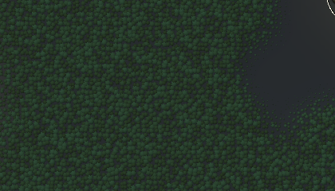
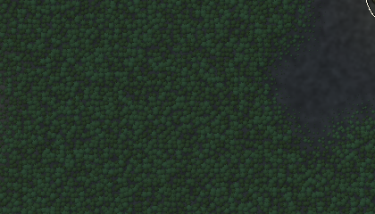
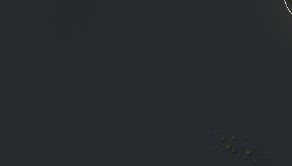
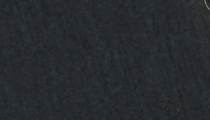
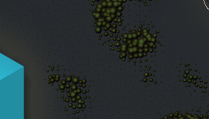
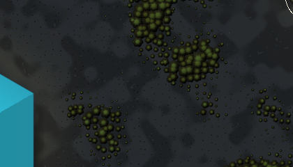
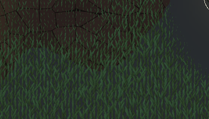
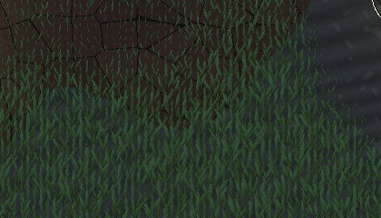
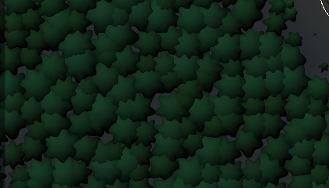
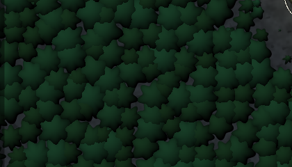
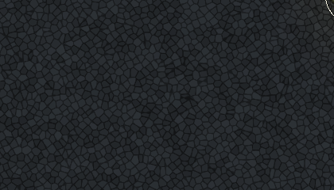
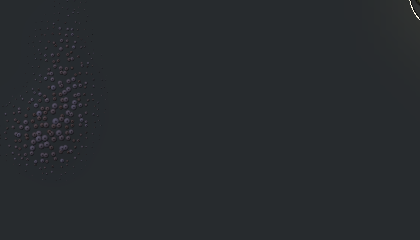
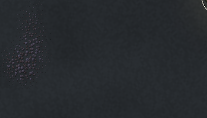
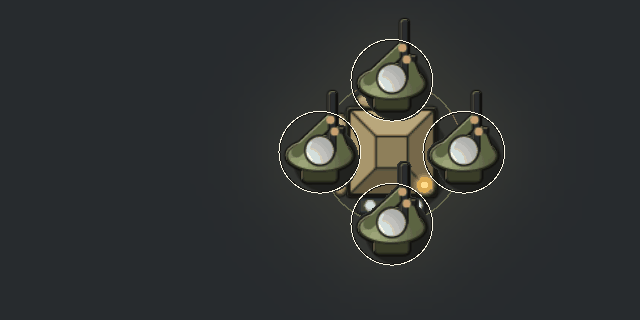
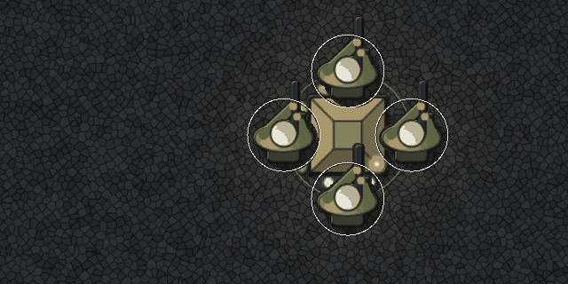
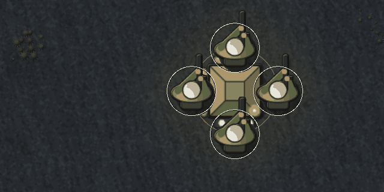
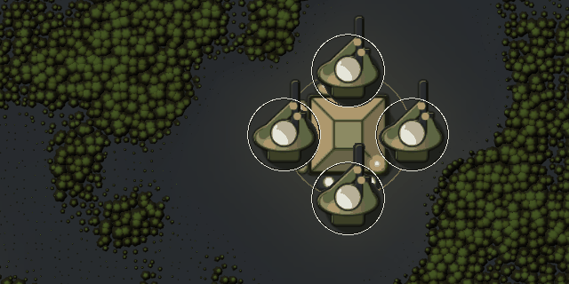
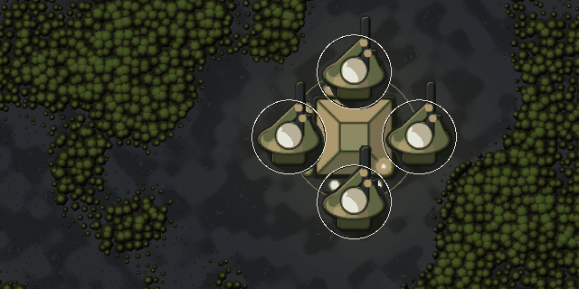